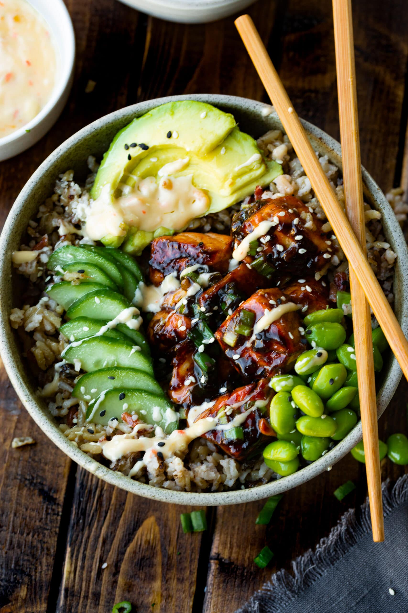

Salmon Rice Bowl

Description
This poke classic is fully-cooked and simple to enjoy.
A healthy choice packed with protein and vegetables, you can feel good about making this delicious dinner again and again!
Ingredients
- 4-6oz salmon fillet
- 1 cup cooked white rice
- 1/4 cup edamame, shelled
- 1/4 English cucumber, sliced
- 2 stocks scallions
- 1/2 avocado, pitted and cubed
- juice of 1/2 lemon
- 2 tbsp mayonnaise
- 2 tsp sriracha
- 1/2 tsp salt
- 1/4 tsp black pepper
- 1/2 tsp onion powder
- 2 tbsp olive oil
- semame seeds, optional for garnish
Steps
- Cover salmon fillet in spices and cook in olive oil over medium heat, approx. 4 min per side.
- Remove salmon skin and set aside.
- Prepare sriracha mayo by combining mayonnaise, sriracha, and lemon juice in a small bowl.
- Arrange salmon fillet and pre-cut vegetables in bowl over cooked white rice.
- Drizzle with sriracha mayo.
- Chop scallions and sprinkle on top.
- Add sesame seeds for garnish as desired and enjoy!